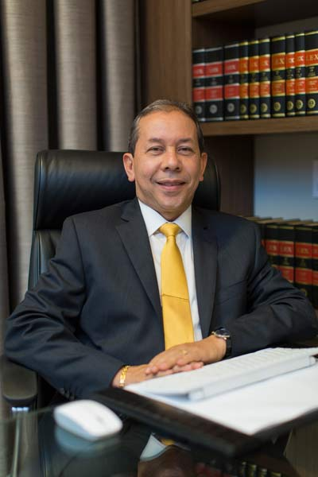

José Rubens Barreiros de Leão

Áreas de atuação
Direito Constitucional, Administrativo, Eleitoral, Trabalhista, Comercial, Consumidor, Processual Civil e Responsabilidade Civil.
Formação Acadêmica
Pós Graduado Lato Sensu em Direito Civil e Processo Civil (com monografia) pela Universidade Estácio de Sá, do Rio de Janeiro/RJ. Agosto/1999 - Novembro/2000
Bacharelado em Direito pela União das Escolas Superiores do Pará – UNESPa – Belém-PA. 1985 - 1989
Experiência Profissional
- Membro Efetivo do Conselho Estadual de Regulação e Controle de Serviços Públicos – CONEREC/ARCON-PA – biênio 2012/2014. Outubro/2012
- Juiz Efetivo do Tribunal Regional Eleitoral do Estado do Pará – recondução – biênio 2010/2012. Março/2010
- I Encontro Nacional de Juristas dos Tribunais Eleitorais – Rio de Janeiro/RJ. 30 de maio de 2008
- Presidente da Mesa do III Seminário da Justiça Eleitoral. Tema: “O Combate à Captação Ilícita de Sufrágio para Preservação da Democracia”. Março/2008
- III Seminário da Justiça Eleitoral – Belém/PA. 10 e 11 março/2008
- uiz Efetivo do Tribunal Regional Eleitoral do Estado do Pará – biênio 2007/2009. Agosto/2007
- Diretor do Departamento de Administração da Procuradoria Geral do Estado do Pará. Junho/1997 - Agosto/1998
- Membro do Tribunal de Ética e Disciplina da OAB-PA. Outubro/1996 - Dezembro/2003
- Presidente da Associação dos Procuradores do Estado do Pará. Junho/1996 - Junho/2000
- Subprocurador Administrativo e Patrimonial da PGE. Maio/1995 - Junho/1997
- Posse no cargo de Procurador do Estado do Pará, depois de aprovado no IV Concurso Público. Junho/1994
- Inscrição no Quadro de Advogados da OAB-PA. Maio/1990